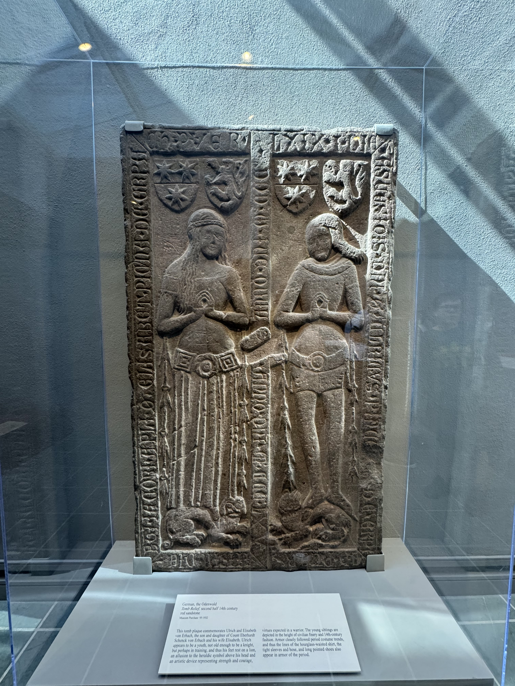
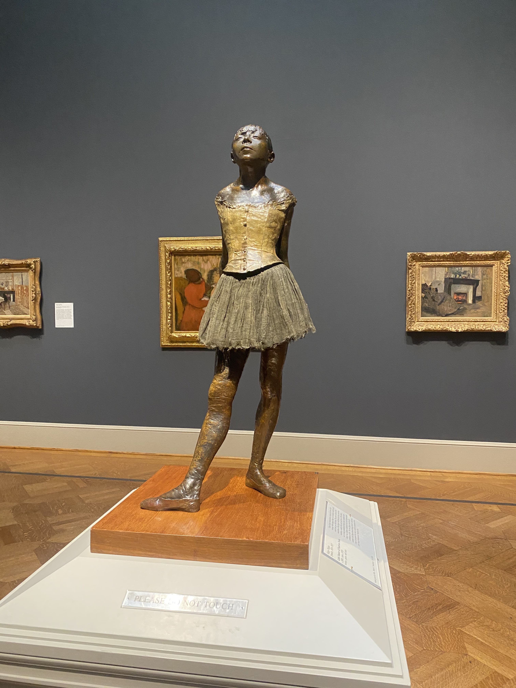
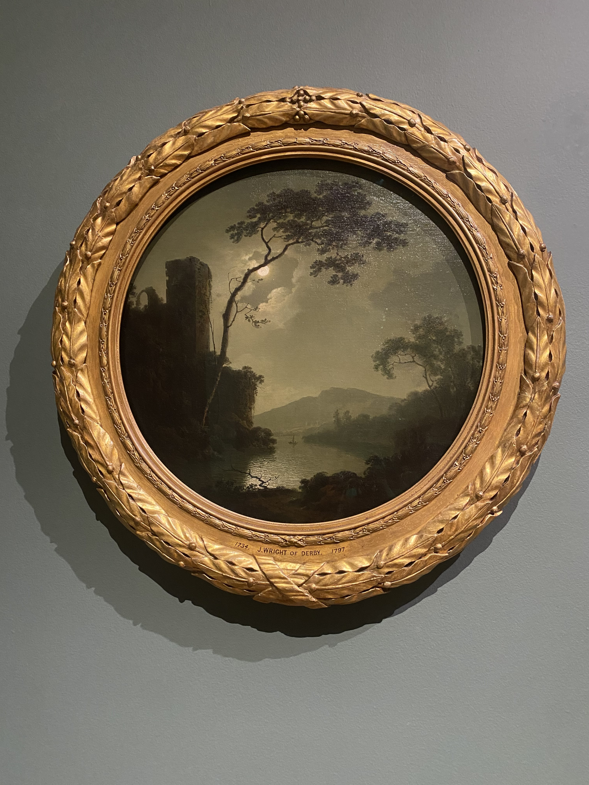
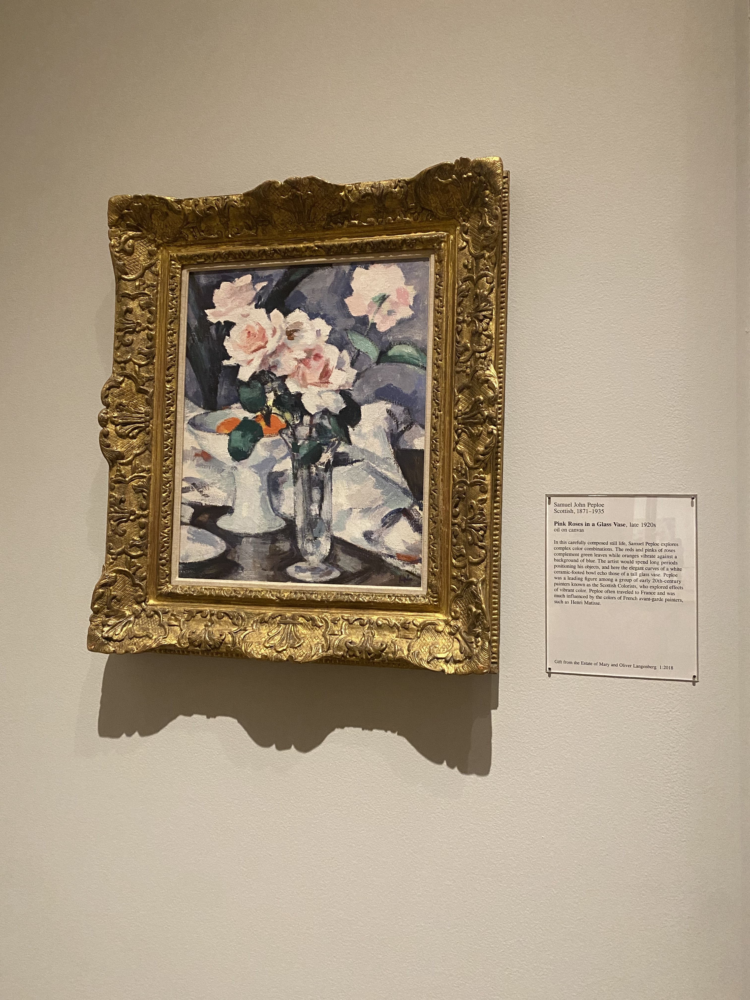
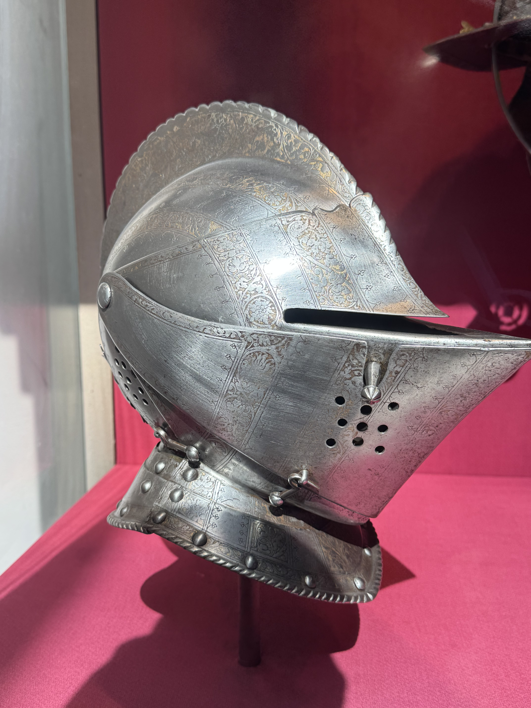
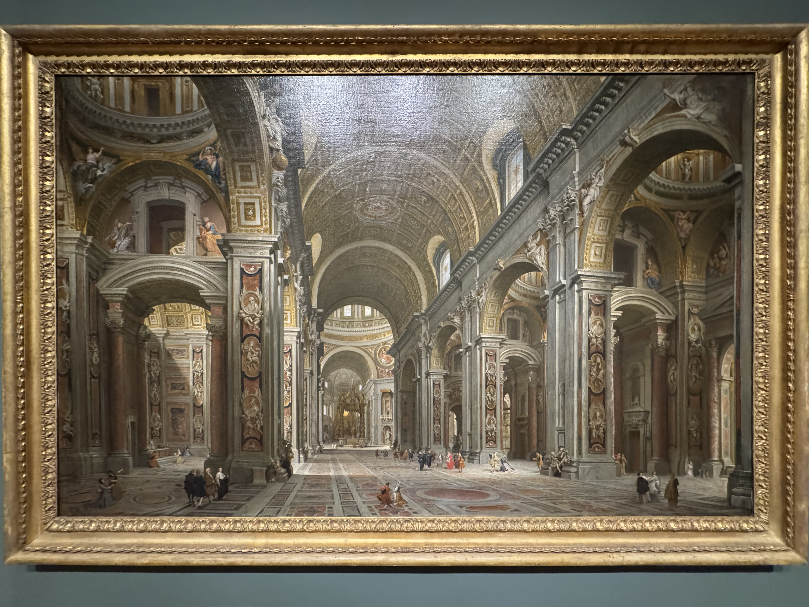

One of my hobbies includes artistic activities like painting or drawing (even though I am not great at it).
I recently went on a trip to the St. Louis Art Museum and would like to share some of my favorite art pieces
from the trip.






Gaming
Gaming is most likely my favorite hobby. It is very versitile in that I can either play a game to cool down after
a rough day, play an interesting story game, or have fun with friends. Ever since I was a kid, I have been playing
games, and even before I started, I would watch my older siblings play games. Video games has been one of the main
factors I started to learn how to code (even though I would like to do more than develop games). Here are a few of
my favories!